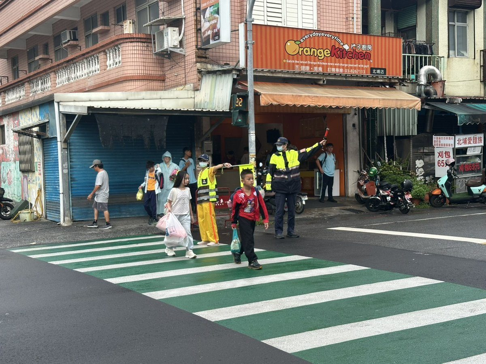

開學日新城警啟動護童勤務 守護學童平安

可樂電子報小編/編輯
今日為全國國中小及高中開學日，學子結束暑假迎向新學期，花蓮縣警察局新城分局全面配合各校作息啟動「護童勤務」，於校園周邊重要路口與通學路線加強交通疏導與巡護，守護學童上下學安全。

開學首日校園周邊車流明顯增加，新城警分局派員進駐轄內各級學校周邊執行勤務，分局長賴楷淳更親赴北埔國小，與校長、教師及導護志工共同維護校門交通、協助學童安全通行，並實地檢視校園周邊交通與安全狀況，展現警方對學童安全的高度重視。

賴分局長同時把握開學契機，帶領同仁向學童宣導交通安全與婦幼保護觀念，提醒過馬路走行人穿越道、遵守號誌、留意人車動態，並建立自我保護意識，不隨意接觸陌生人或收受不明物品，現場也準備小禮物與孩子互動，讓安全觀念以輕鬆活潑的方式深植心中。警方也呼籲駕駛人行經校園務必減速慢行、禮讓行人，家長配合動線與警方指揮，共同營造安全友善的通學環境。